BarbecueNight.com Page 6
The Every Thursday Night Barbecue At Dick Flaharty's
The most recent Thursday, followed by the previous barbecues...
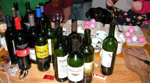
20 March 2008:
Easter egg coloring, carefully watched by Bear the dog because it looked like food, was the activity of the night, except for the conversation, food, wine and communication with space aliens as usual, some of them present. The egg in the wine facilitated a delightful color to the egg, and a subtle mix of calcium with the wine to effect a health drink.
A local wine tasting earlier in the evening facilitated the arrival of a rich array of flavors.
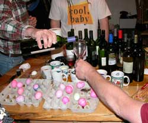
A short dissertation on US East coast mountain climbing and skiing was offered, which naturally led to the discussion on the wisdom of carrying firearms on airplanes. Well, the Saudis who hijacked the four jets on 11 September ruined any future hijacker's possible claim that everything will be okay if the passengers cooperate and just remain in their seats. There will be no actual hijacking that does not result in an emphatic reaction by the passengers. The pilot cabin doors have been made bullet-proof, so the passengers just as well be able to more effectively maintain the calm among themselves by knowing that any terrorists know that several or many good guys are armed. A request that all on-board ammo be frangible bullets would be reasonable, to reduce the post flight airplane repairs. Of course many people who were taught to never question anything government tells them would have been a bit confused by the discussion, but that is why we would have poured them a bit more wine.The Mo and Logan factor is reported to be stuck in Peru, enroute Brazil and the fine sailing vessel Scotty Ann, on account of some excuse. That led to the usual rhetorical tap dancing by the lawyer present, the moment the common law was mentioned for bait. Lawyers and the common law are more fun than climbers and the National Park Service pigs. The entire empire of lawyers draining society of its productivity could not exist if the easily identified common law were taught in grade school as is logical. Nor could law schools exist. Law schools stopped teaching law, and started teaching only lucrative, endless process, shortly after 1900. If law schools taught law, any awake freshman 101 law student would stand and ask why lawyers exist, and change his or her major to anything more useful to themselves and society.
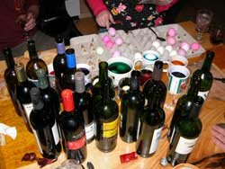
To be under the rule of a king, one need only do as the king says. That is easy. The kings who survived were taught by their parents to never contradict themselves, or the people would rise up against them, by imperative for a rational society. Under the rule of written law, the ruler is words on paper. One need only be literate, and do as the words on paper state. That is easy. But typical US lawyers came along as staff of the law-writing legislative, executive and judicial branches of government, and wrote the laws in complexified legalese laced with Latin and labyrinths of ludicrous intra-references, so that the common people cannot understand the laws as written, and so people need to pay money to lawyers to be verbally told what the written laws mean, so we are no longer under the rule of written law, and instead under the rule of lawyers who wield the power of kings. A king is a more rational system of law since there is only one per country, while there are thousands of US lawyers incessantly contradicting each other when telling people what they must do to obey the law. It is not possible to reliably obey the law if lawyers incessantly contradict each other when saying what the written law means, which is precisely what lawyers do to generate more victim clients and more money. A society under the rule of lawyers is a society of fools soon to collapse. And lawyers, who value nothing above their Money God, are therefore the greatest fools, ignorant of the concept of reasoning such as within this paragraph. They could read these words, and still remain clueless of what commonly intelligent people learn by using their mind for reasoning rather than money or power.
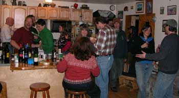
The common law is easily learned, and written in plain language, so upon its mention lawyers display a grand comedy fooling only fools out of easily learning or even listening to what the common law actually is. But lawyers enjoy good wine, and cannot tolerate themselves too often, so they show up at BBQnight.com for an occasional fix of reality rhetoric. However slowly, human knowledge advances. Not wise to have been a lawyer or National Park Service pig when the common people belatedly figure out how lawyers and Park Pigs fooled the people out of their rights. On the morning of every collapse of every government in history, it is replete with government personnel, including government licensed lawyers, who cannot figure out why the common people, including the police who were also made fools of by lawyers, are building scaffolds in the streets.The MIT robotic pack horse on YouTube impressed everyone. We each want one to train for ice climbing, for the Ice Tower, so we can sit in the Ice Shack, drink fine wine, and tell climbing stories about how good our robotic ice climber is.
One adventurer among us is apparently going to Chile this summer to work on her Astronomy PhD at the cool Chilean telescopes. Expect a full report, next autumn.
13 March:
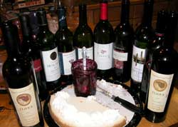
Bear the big black dog maintained an uninterrupted vigil on the transactions between the stove and the counter.
The Mongolian military in Iraq report, offered by the officer purportedly in charge, was introduced but lost in the shuffle toward the cheesecake and blueberry jam. A more extensive report on the Mongolian mission will be pursued as soon as certain data is unclassified. The always popular rush to war is often mitigated by the more astute military strategy of fine weather colleagues fully participating at sufficient distance to establish rhetorically impressive credentials and subsequent ceremonies without engaging in the foolishness of any proximity to things flying through the air at deadly velocities. There is much in the news of war that is not in the war. And there is much in war that is not in the news, or there would be no wars.
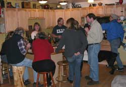
Fairbanks is a somewhat unusual town with a high percentage of military veterans who like it here and stay to encounter the real world of a commanding environment (cold winters, heavily armed mosquitoes, grizzly bears, end-of-the-road neighbors, BarbecueNight). Such a real world, especially outside the government cauldron lavishly living off the taxed labor of everyone else, illuminates the abject stupidity of wars. Wars, especially certain of those that might come to mind, are often started by mental midgets who politically weaseled out of their own opportunities to stumble into the front lines with rifle in hand, to therefore not learn the absurdity of wars. Fairbanks offers an amusing opportunity for more of those knowledgeable war veterans to drive onto the two local military bases, to therefore learn even more. The US Army and Air Force sorts, with all their weaponry and war training, which might suggest their ability and confidence, are deathly afraid of everybody and everything, displaying what can only be objectively described as abject fear of everyone including even those whom they lie about protecting rather than robbing. Driving onto their bases is like trying to get into Baghdad's Green Zone. "Where are your papers, Comrade? Get out of your car, we must search it. We must search you also. Bend over." Previous war veterans are most feared, harassed and hated by George Bush's fear-stricken military sorts who have not even thought enough to recognize that is how they will be treated when they get out of the military.
Government and military sorts cannot figure it out, even if they read these words. They were taught to ask no questions of what they are doing, describing the process to remain ignorant. They teach their offspring to be as ignorant, or wars would not exist. If you are in the military, you will soon enough become the enemy of your government, especially if you act suspicious by expressing too much support for it.
One is always their only enemy, and a very effective one when they perceive they can force the other guy to do as they are told, rather than express the reasoning to do as is logical. It is not logical to kill people to solve the problems created by killing people, a concept beyond the intellectual ability of governments and militaries.
The Fairbanks concert music scene attracted more interest during the evening's discussions. The behind-the-scenes coordination of concerts effects superlative exchange of social knowledge extending far beyond the music. The music people do not have to inspect your identification papers and search your car before you can join them for thoroughly enjoyable times.
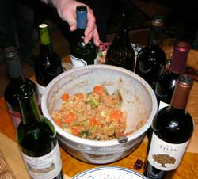
The Hawaii Report, from Hawaii..... The government is pleased to report that the police crack-down on marijuana in Hawaii has significantly reduced the common use of the drug among Hawaiians.
Therefore the use of more easily concealed Meth has dramatically increased with noticeable results. Instead of happy Hawaiians on the streets and beaches, the result of pot smoking, welcoming tourists for a fun vacation, agitated Hawaiian Meth freaks are attacking tourists and increasing social stress levels. These are real life encounters that the government and its always compliant news journalists cannot cover-up.
The word is out. Avoid Hawaii. The government-induced Meth freaks can suddenly ruin a vacation and more. Vacation on the pristine beaches in beautiful Vietnam, South Africa, Kamchatka, Nome or anywhere but Hawaii for a few years until the Hawaiians cycle through their Meth addicted government, and get back to enjoying life with pot.
Recommend Hawaii for the Bush and Cheney families. They surround themselves with enough tax paid armed goons to always keep them inside their ignorance-based fortress against the world.
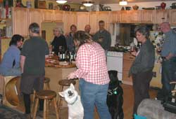
A marketing proposal for vacations in Alaska was introduced and found to be of such high quality that it was immediately ascribed to the secret-idea classification. Carnival Cruise Lines, whose subsidiaries own 85 percent of the tourists herded through its fenced version of Alaska, would pay a fortune for the idea if they could understand what is outside the fence. You will hear of it when it is announced to the vacationing world, and you will know that you were among the exclusive few who heard about it first at BBQnight.com, if we remember it.
The idea generation process became sufficiently elevated that the noise level raised to grade three cacophonous, including the comments of Suka the white dog who had a great idea for the baked salmon.
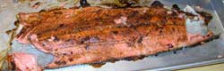
Do not know what spices were on the salmon, but it was devoured with enthusiasm. Suka, Brio and Bear got some of the skin.
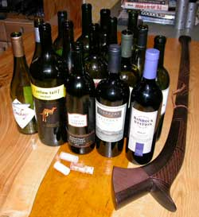
First, the Thursday Night BBQnight notice did not get emailed because we sent Dick (who guards the obviously valuable email list), on his own maxed-out credit card, off on a wine gathering business trip to Italy. Then every time the phone rang we fumbled with the phone that we couldn't figure out anyway because it has so many buttons in so little space that you can't pick it up without punching 3 or 4 that cut off the call, or by the time you get your reading glasses out to try to figure out the dinky little international symbols for punch-this-button-not-that-one, the recorded message has finished and the caller already hung up because they figured no one was at BBQnight.com.
The Fiji guy preferred the Australian and Chilean wines which were also quite good and plentiful for the evening, as you can see. What do you want to know about Fiji? Well, if you were not there for the report, you will just have to go to Fiji and come back with another report. Bring some Australian wine. Where is Fiji anyway?
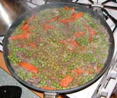
A professional dissertation comparing the Fairbanks and Aspen Colorado realty markets led to the conclusion that we want a modest lot in Sitka where we can stage our various sail boat explorations when we can afford to get a sail boat if we could afford a lot in Sitka. If you already have such a lot, you are welcome to join the prestigious BBQnight.com whoever-stops-by with fine wine.
The density and thickness of the fortress walls built by American lawyers and judges to defend their insatiably greedy, inherently doomed institution, from the inevitably defeat by the (superior) common law was weighed and measured to ascertain the few years or possibly months that their institution can survive before their ruse fails, the common people discover the greatest social maliciousness and damage perpetrated since the Roman empire, vastly more than the dozen or so paltry US presidential ego gratification wars after WWII, and Americans therefore rally to Shakespeare's advice, or perhaps laugh robustly and abandon the American judicial system with a process no legions of lawyers and judges can survive. You cannot fool all of the people all of the time, by design of the human mind, and the attempt can fail suddenly when certain of the people, even a small minority, recognize the ruse. The moment the police belatedly recognize that the lawyers and judges were lying to them the entire time, making fools of them and their families the same way and for the same reason the lawyers and judges were fooling everyone else, destroying the last remnant of the reputation of all American police in front of their more questioning offspring, is the moment the lawyers will need more than good lawyers, and nothing more will be available. The police, including those of the courts, will do to the lawyers and judges what the lawyers had the police unlawfully doing to the common people, without respite or recourse. However, until then, we encourage our good friends within the fabled institution of jurisprudence to assist with our mutual analysis of fine wine, intellectual discourse and revelry, not unlike the French government aristocracy of its day before their ruse inherently failed.
We raised our glasses in a toast to the wine maker of the 1990 Zin, and left a bottle of wine for the pending return of Dick in case the Italians discover the condition of his credit card and run him out of the country without any wine.
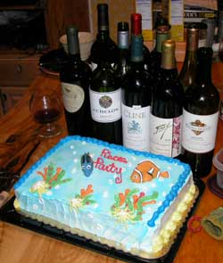
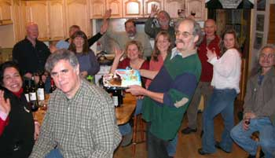
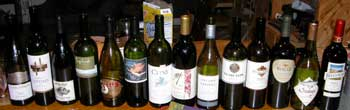
We enjoyed the story of the little kid who ran away from home in North Carolina, with a full announcement of the expedition to his parents. He more fully considered the nearby swamps and snakes, after leaving the front door, and before passing the back door which he quietly sneaked back into, and hid in his room. Considering those snakes, it was a wise choice, but not wise to stay quiet so long that his Dad went looking for him in the swamps with snakes. Years later the kid developed a taste for fine wine, in Alaska, so his survival of the swamps and his amused Dad was fortuitous.
And yet again the overthrowing of several governments, and getting out of town on adventures, were set back by the duration of another Barbecue Night.
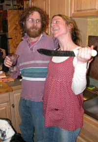
14 February: The Chairman of the "These Sorts Are Having Too Much Fun" Committee convened a meeting of the full committee, and after great debate concluded that only those more interesting photos relating to literary masterpieces commonly enjoyed by the eclectic BBQnight crowd, such as Shakespeare, and his wise suggestions, would be uploaded on the official page.So those of you BBQnight folks who wanted your favorite photos of yourself having entirely too much fun and laughing a lot, will have to endure the moderation of the Central Censor Commission, which meets in cyberspace on another night of the week.
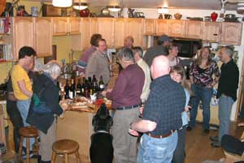
All commission disputes are impartially settled on the quality of the label on the wine brought by the disputing parties. In case of a tie, the older vintage prevails. Quantity can be considered, starting at case lots.
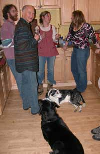
Bear and Blue, always attentive, understand which part of the floor space to occupy, the kitchen between the stove and the counter. Yes, the humans move around them in harmony with the normal flow of life.Well yes, you might imagine the elevated quality of the conversation upon the entrance of the Silver Oak. And it required a bit of the above indicated defense while it properly breathed for an hour or so. There was a sudden flow of glasses toward the protector of the bottle when she ascertained the proper time for serving, and not a moment before.
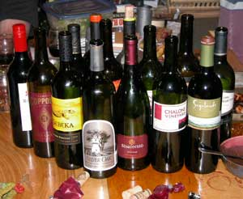
Imagine what the palate initially perceives as a light medium flavor that accelerates into rich cedar with mellowed tannins and the dark skins of cabernet grapes as a luscious spice. Silver Oak, but a bit over priced like other such wines above the financial diversity of we discerning plebeians of the northern dumpster diving subculture.
As usual, the flavors of the diverse wines, some hand-carried or otherwise smuggled from other countries, were discussed and enjoyed for their own qualities. A wise goal in life is to pursue the variety of knowledge and experiences one can acquire with a mind willing to do so. An occasional stemmy flavored wine, while ill commented upon by the less astute, can place one's mind in a beautiful hillside vineyard of Italy or Australia during a sunny mid summer, a lush green valley below flowing toward the sea, while Silver Oak can place one's mind in the office accounting books trying to figure out how to finance another one.
The best bottle of wine ever enjoyed by one of adventurers present, was some unknown cheap white wine pulled from his kayak wine hold for a mid-day epicurean repast on a remote beach along the Southeast Alaska outside coast, solo, with fresh caught crab on the plate, eagles soaring above, and whales breaching in the sunlit bay below a smattering of glistening white puffy clouds.
Such a comment certainly delights one of our more astute analysts of fine wine who recently had to instruct certain locals on the wisdom of an occasional white wine gathering for the flavor discoveries eluding the red wine crowd. Well, in the middle of winter in Fairbanks, in an outlying valley known for its cold, and moose routinely ambling through, the flavors were not altered by any perceptions of a warm sunny afternoon on the deck that is often found in the white wine rhetoric.
A newly accepted applicant for a modest Turley wine allocation gracefully informed the long standing commander of the local allocation that said commander may not have to endure quite so many suggestions that he consider arriving with a Turley, but to not let the competition interfere with such a wise decision. The Turley wine allocation / production ratio seems to be well managed. Of course mention is not made here of certain exclusive wines that are rare because they are only known to the insider elite who are of that status only because they are stuck in Fairbanks, the north end of the wine civilization road. Tell no one of Lamborn Family wines, so as to not diminish the limited supply we so enjoy here.
You might note that among the extent and diversity of entertainment offered to the humans who are in sum the comic relief for their designer, the interaction between the complex taste buds and the complex brain were mixed with the concept of time, the latter changing the former so as to alter the perceptions and descriptions of perceptions, leaving the conversations of such diverse sorts as the BBQnight folks scrambled with the delight of recognizing the obviously poor taste of the other guy as precisely what one most enjoyed at a prior time, while the other guy emphatically not believing what they will come to appreciate. One such among the group mentioned that the others would not believe how many people arrive at the tables at a wine tasting function, and ask for only the sweetest wine they have. I certainly would not believe it.
How hats with feathers got into such a detailed discussion is known only to the guy with the top hat with the goose feather. So does one change their hat, or their feather?
The theory that certain glaciers were first started by massive 100 year event snow avalanches into valleys at the beginning of sudden onset global or regional cooling stretched the limits of science to its theoretical limit. But if you find any old trees melting out of the ends of glaciers during global warming, email us immediately.
In a 10 foot by 10 foot space, including the counter, 7 conversations were counted at one moment, all rapidly advancing the scientific knowledge base of the intellectual elite, including Bear and Blue.
As formally announced during this BBQnight, the official "What Is This" puzzle introduced on this website 15 March 2007 was solved by Ed of Land-o-Links.com, through Rob Hartmann.
 The internet knowledge chase went through
some of the same local discussions and questions, before it arrived
quite definitively at www.Stutler.cc/pens/yatate/index.html.
The internet knowledge chase went through
some of the same local discussions and questions, before it arrived
quite definitively at www.Stutler.cc/pens/yatate/index.html.
Scholars and scribes, common to BBQnight folks, will not be found without a Yatate of good quality.

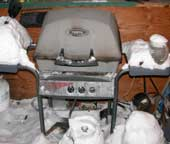
Oh, the grillmeister had to unsnow the BBQ grill again to start with the moose steaks. The chicken and other animal parts found their way out to the deck and grill later. Hmmm, I wonder if we left anything out there. Well, there was a lot of wine.
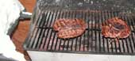
Page 7 March 08 ------ September
08
Page 8 September 08 - December 08
Page 9 December 08 --- May 10
Page 10 September 10 - Present
Page 1 November 06 - April 07
Page 2 May 07 -------- August 07
Page 3 August 07 ----- October 07
Page 4 October 07 ---- December 07
Page 5 January 08 ---- February 08
Links